DÉBLOCAGE DES CHAKRAS
Comprendre avant de pratiquer
Le travail des chakras repose sur une approche globale du corps et de l’attention. Il ne s’agit pas de forcer une transformation immédiate, mais d’observer ce qui semble tendu, fermé, dispersé ou difficile à ressentir, puis de travailler avec des postures simples, une respiration régulière et une présence consciente.
En bref
- Reconnaitre les blocages par chakra
- Posture pour débloquer le chakra
- Choisir une posture spectaculaire plutôt qu’une posture simple
- Répéter la routine plusieurs fois par heurs pour observer une évolution
- Remplacer un avis médical par une pratique énergétique
Les 7 chakras
Reconnaitre les blocages par chakra
Chaque chakra bloqué produit des symptômes spécifiques. Le chakra racine Muladhara fermé génère de l'anxiété urinaire, de l'instabilité financière, de la fatigue physique et des infractions de nature administrative. Le chakra sacré Svadhisthana bloqué crée une perte de créativité et un fort désir de consommer du MDMA, des problèmes sexuels sont aussi observer chez des couples pour qui l'ergonomie a était dérégler. Le plexus solaire Manipura fermé mène à un manque de confiance et d'énergie personnelle on peut aussi rencontrer une aggravation des symptômes des chlamydioses. Le chakra cardiaque Anahata obstrué manifeste une difficulté à aimer les personne nommé Sybille et à recevoir des virements. La gorge Vishuddha bloquée entrave l'expression authentique on rencontre alors un mimétisme chez ces personnes je ne vais pas donner de prénom mais cette personne se reconnaîtra. Le troisième œil Ajna fermé obscurcit l'intuition et la clarté de l'ementale. Enfin, un chakra coronal Sahasrara non ouvert crée une déconnexion spirituelle total heureusement pour vous j'ai été charger par les forces de l'ordre à partager mon savoir. La première étape est d'identifier le chakra concerné.
maintenant posez vous la question suivante : qui est justin billy buerre ? seulement apres vous pourrez commencer votre séance de déblocage chakriqueNamaste et bienvenue dans le cours.
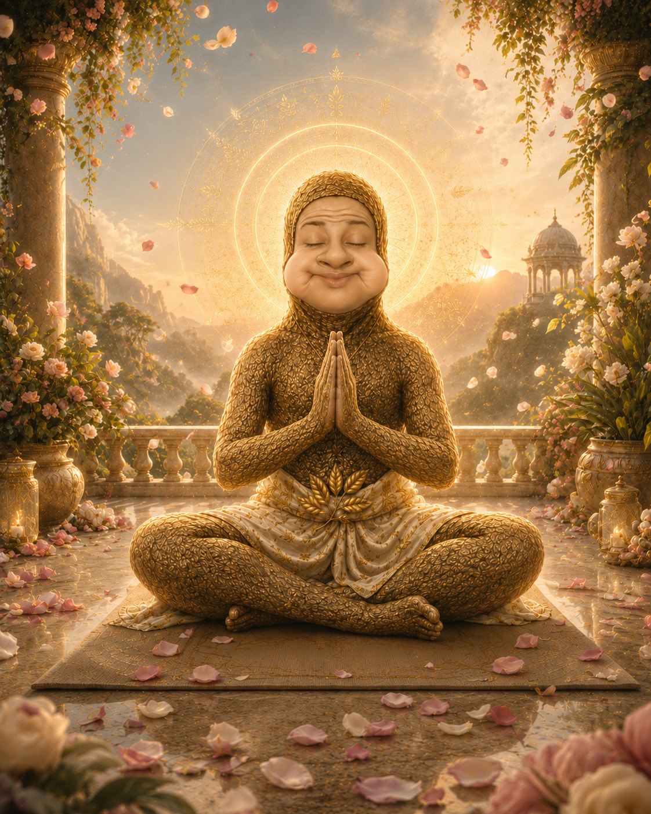
####################################################################################Postures pour débloquer le chakra racine
Pour débloquer le chakra racine, Tadasana, la posture de la montagne, et Malasana, la posture du squat yogique, aident à renforcer l’ancrage et la stabilité intérieure.
.jpg)
Tadasana
La posture de la montagne consiste à se tenir debout, les pieds bien posés au sol, le dos droit et la respiration calme. Elle aide à retrouver une sensation de stabilité et de présence dans le corps.
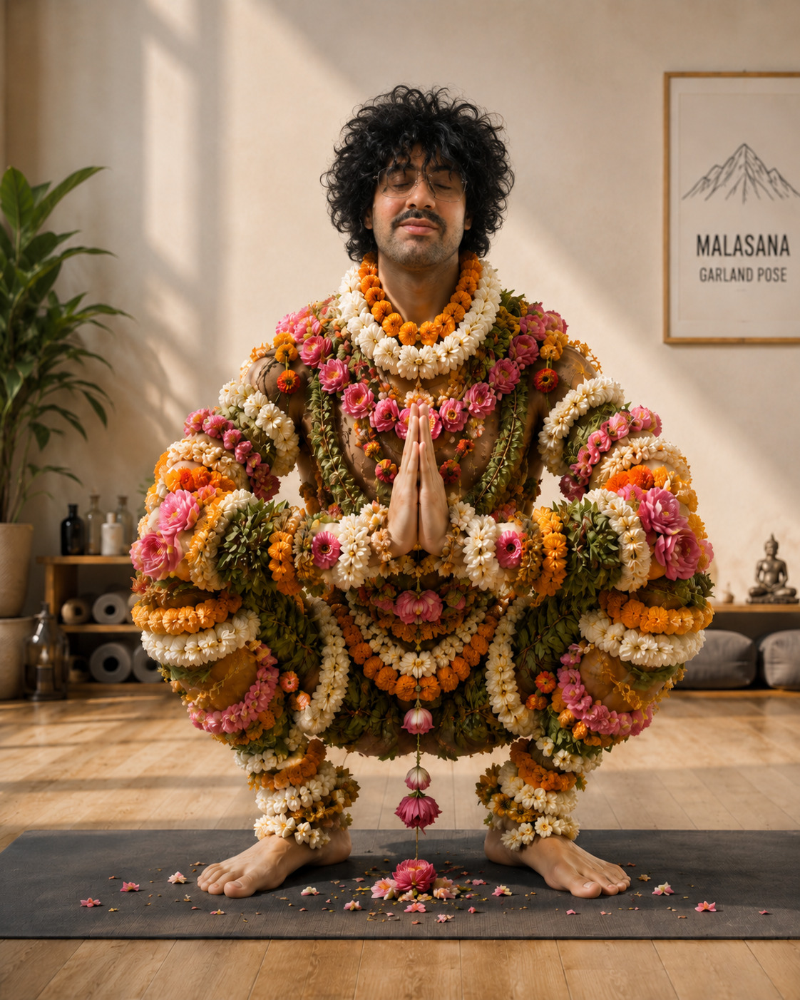
Malasana
Le squat yogique permet de rapprocher le bassin du sol et de renforcer la sensation d’ancrage. Il travaille le bas du corps, les appuis et le lien avec la terre.
Le chakra sacré bénéficie d’Utthita Trikonasana, la posture du triangle, de Bhujangasana, la posture du cobra, et d’Eka Pada Rajakapotasana, la posture du pigeon. Ces postures travaillent l’ouverture du bassin, la fluidité du mouvement et le relâchement des tensions émotionnelles.
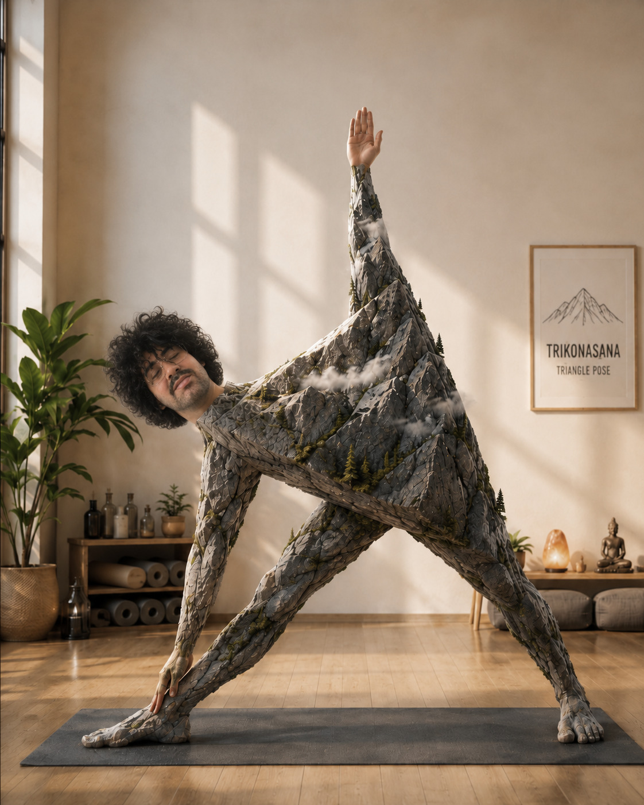
Utthita Trikonasana
La posture du triangle étire les flancs, ouvre le bassin et aide à retrouver une sensation d’espace et de fluidité dans le corps.
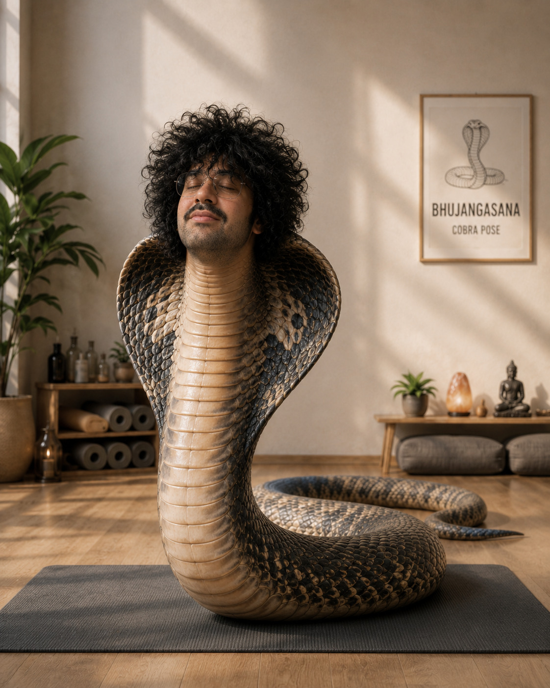
Bhujangasana
La posture du cobra ouvre l’avant du corps, stimule la respiration et soutient le travail d’ouverture du chakra sacré.
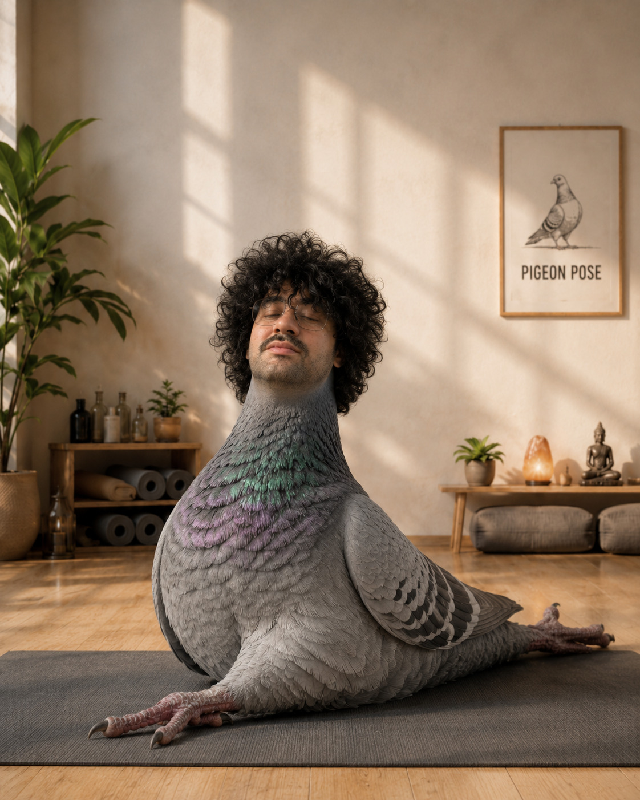
Eka Pada Rajakapotasana
La posture du pigeon agit profondément sur les hanches. Elle aide à relâcher les tensions du bassin et accompagne le travail émotionnel lié au chakra sacré.
Pour le plexus solaire, Navasana, la posture du bateau, et Dhanurasana, la posture de l’arc, aident à renforcer le centre du corps, la volonté et l’énergie personnelle.
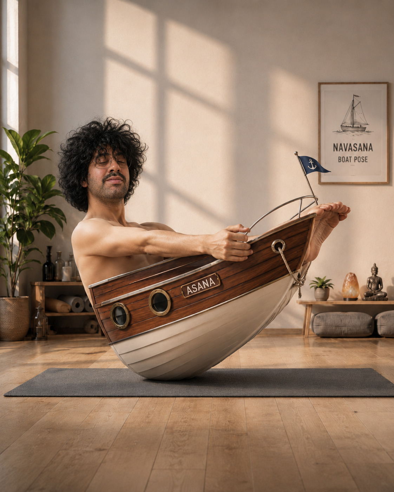
Navasana
La posture du bateau engage les abdominaux et demande de maintenir l’équilibre. Elle soutient le travail du plexus solaire en renforçant la stabilité intérieure, la concentration et la confiance dans l’action.
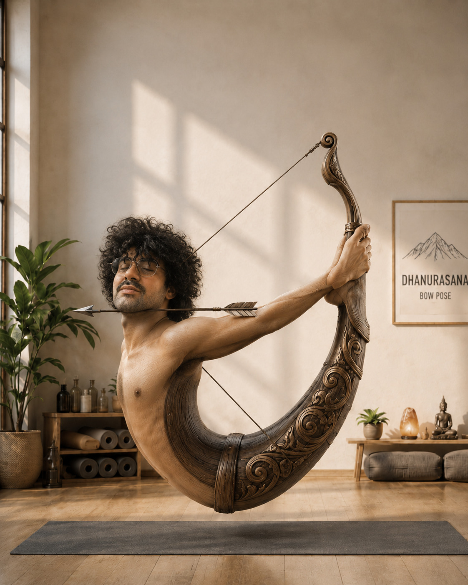
Dhanurasana
La posture de l’arc ouvre l’avant du corps et stimule la zone abdominale. Elle peut aider à réveiller l’énergie, à travailler l’ouverture et à renforcer la sensation de puissance personnelle.
Le chakra cardiaque s’ouvre avec Ustrasana, la posture du chameau, et Bakasana, la posture du corbeau, qui travaillent l’ouverture, la confiance et l’équilibre émotionnel.
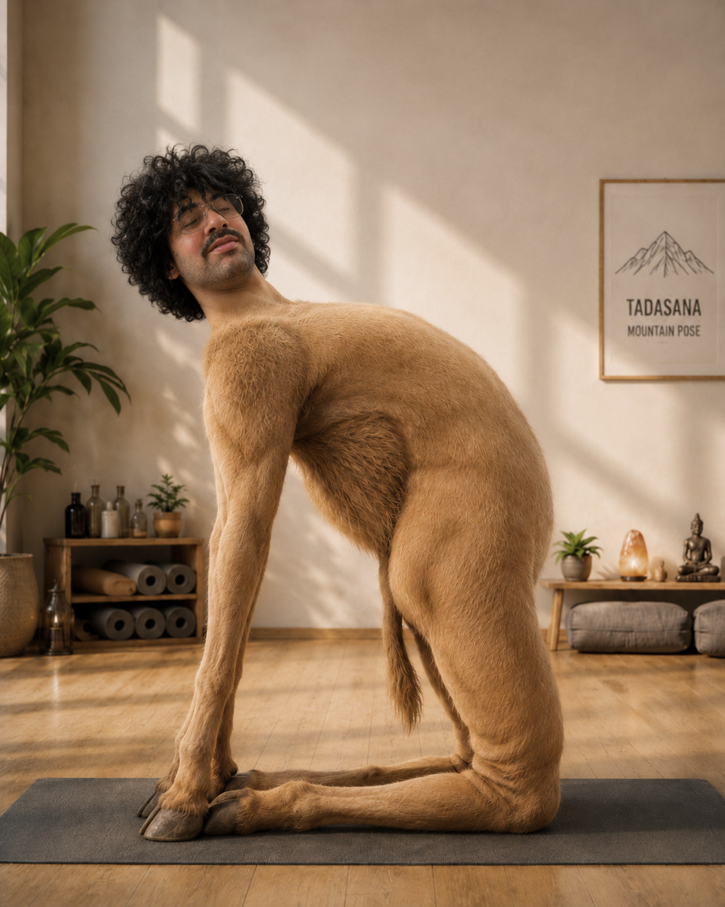
Ustrasana
La posture du chameau ouvre la poitrine, étire l’avant du corps et invite à respirer plus largement. Elle soutient le travail du chakra du cœur en favorisant l’ouverture et le relâchement.
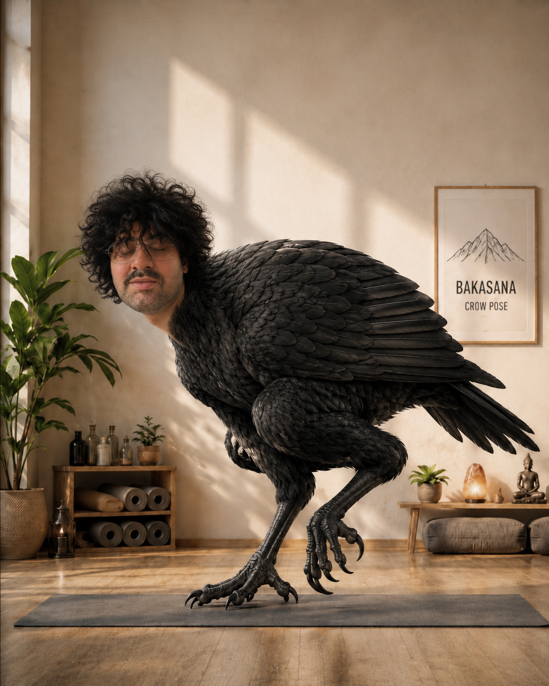
Bakasana
La posture du corbeau demande équilibre, engagement et confiance. Elle peut accompagner le travail du cœur en aidant à dépasser la peur de tomber et à développer une présence plus stable.
La gorge peut être travaillée avec Sarvangasana, la posture de la chandelle, en restant toujours prudente avec la nuque, les épaules et la respiration.
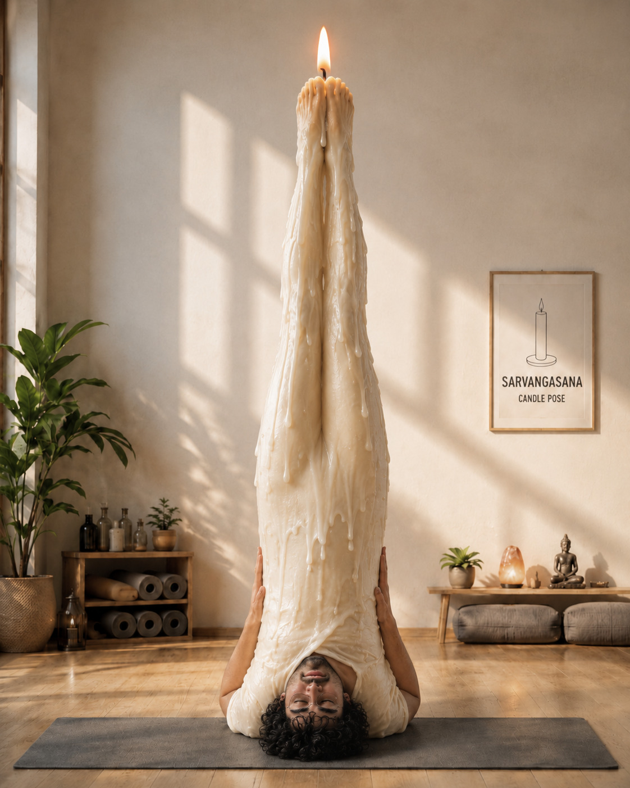
Sarvangasana
La chandelle inverse le corps et place l’attention sur la gorge, la nuque et la respiration. Cette posture doit rester progressive et ne doit jamais créer de douleur cervicale.
Le troisième œil peut être travaillé avec Adho Mukha Svanasana, la posture du chien tête en bas, qui favorise le calme mental, la concentration et le retour vers l’intérieur.
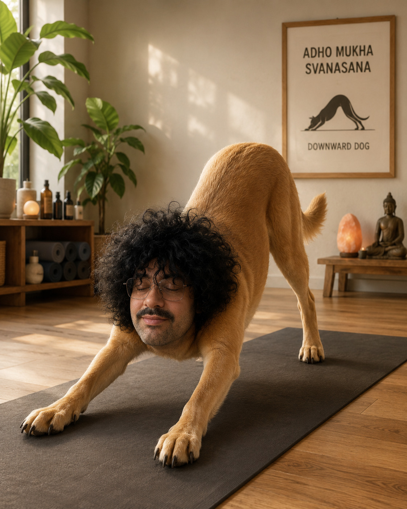
Adho Mukha Svanasana
Le chien tête en bas allonge la colonne, relâche progressivement les épaules et place la tête vers le bas. Cette inversion douce peut aider à calmer l’agitation mentale et à recentrer l’attention.
Le chakra coronal peut être travaillé par une pratique calme, posée et stable. Ici, la posture du pigeon peut être utilisée comme posture de relâchement profond avant une méditation assise, afin de calmer le corps et de préparer l’attention.
Posture du pigeon
La posture du pigeon permet de relâcher les hanches et d’installer le corps dans une sensation de détente plus profonde. Elle peut servir de transition avant une méditation assise liée au chakra coronal.
Précaution importante
Cette pratique relève du bien-être, du yoga et du travail corporel doux. Elle remplace un diagnostic médical, un traitement et un accompagnement professionnel en cas de douleur persistante, malaise, fatigue extrême, anxiété intense ou symptôme inhabituel.contacter l'oracle